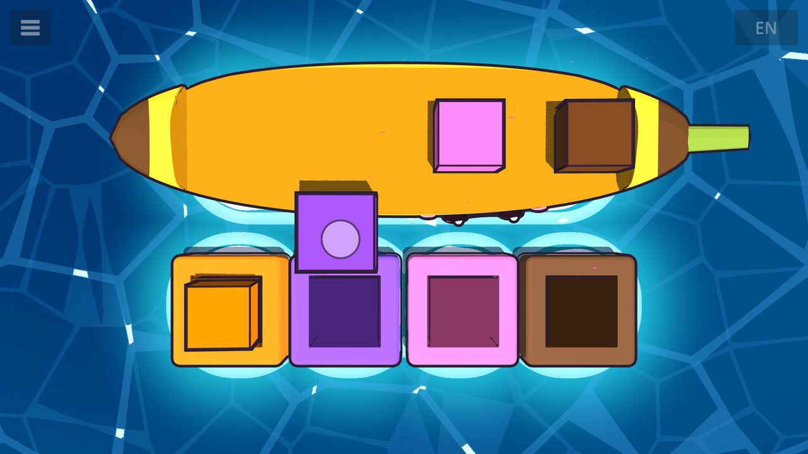
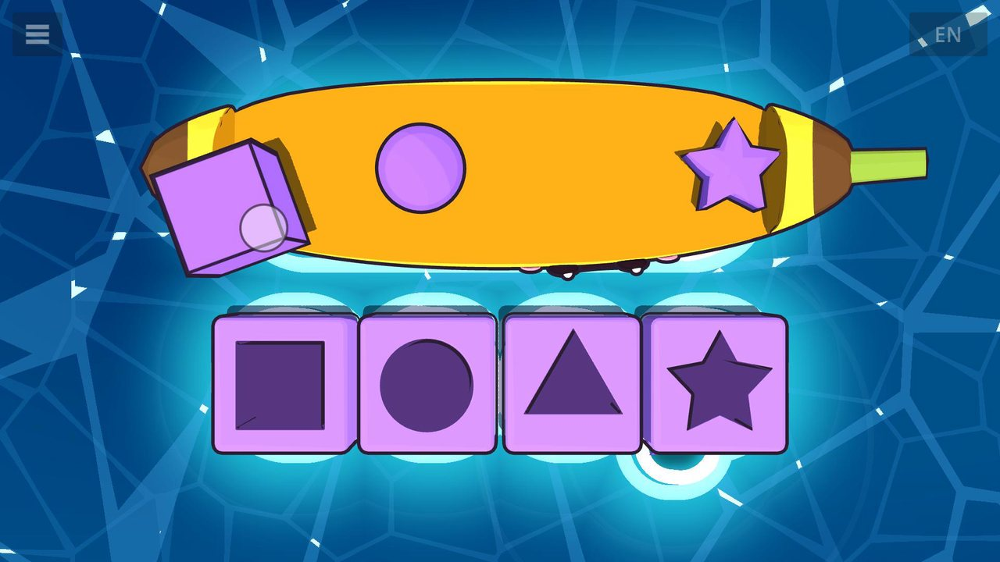
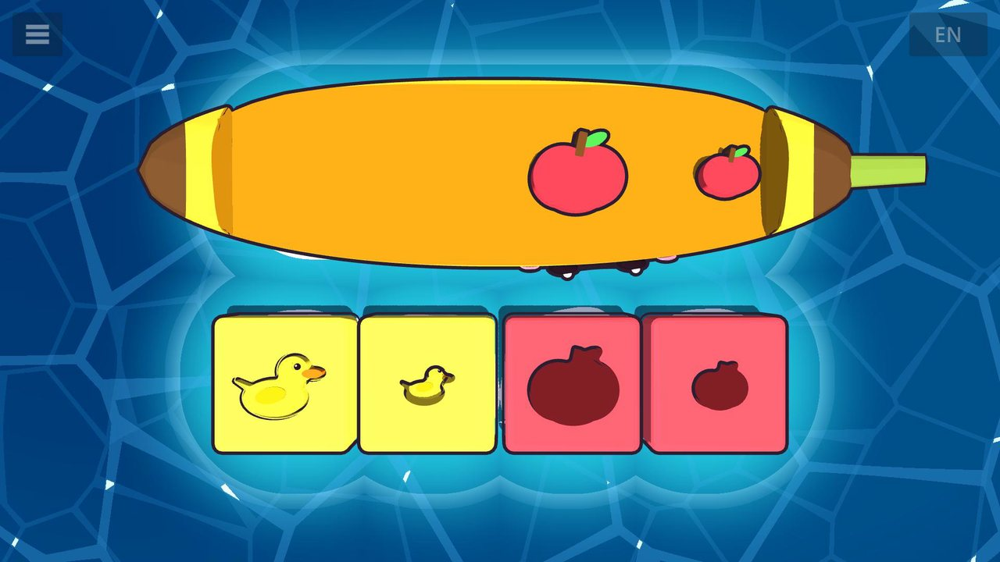
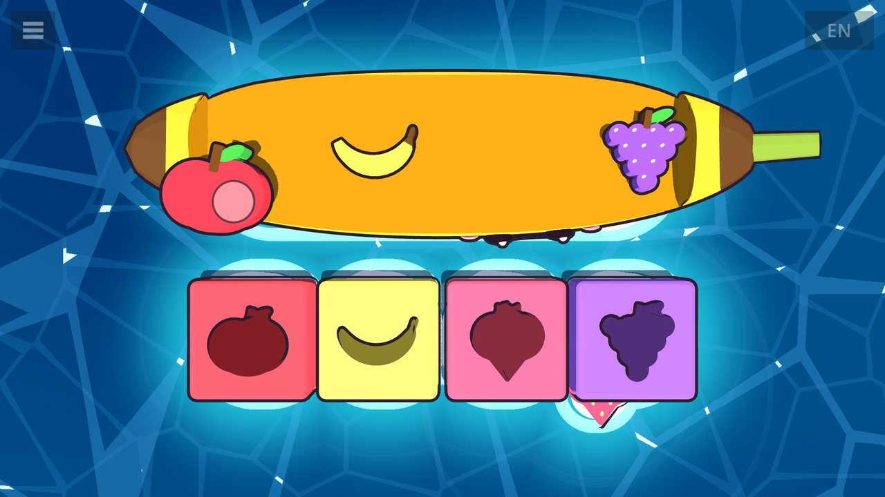
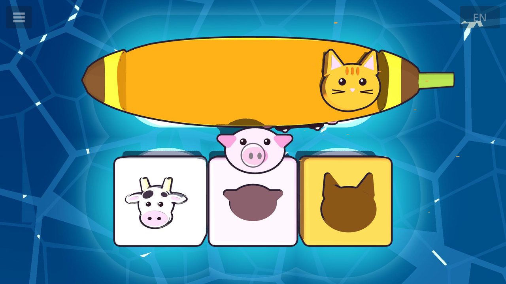
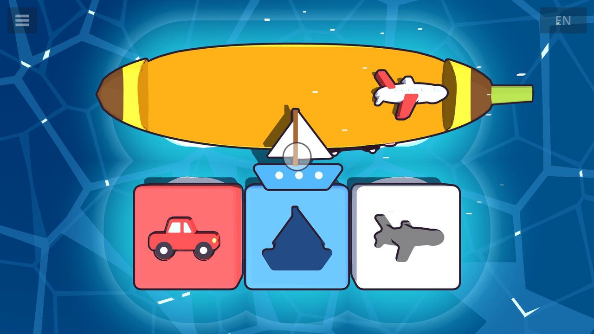
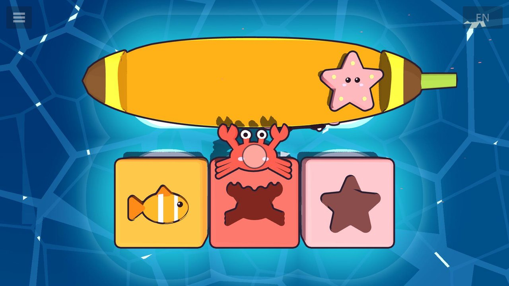
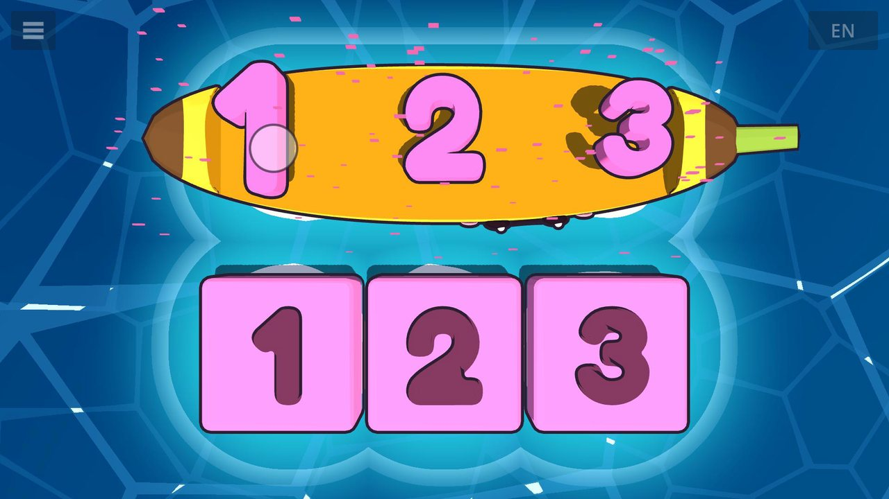
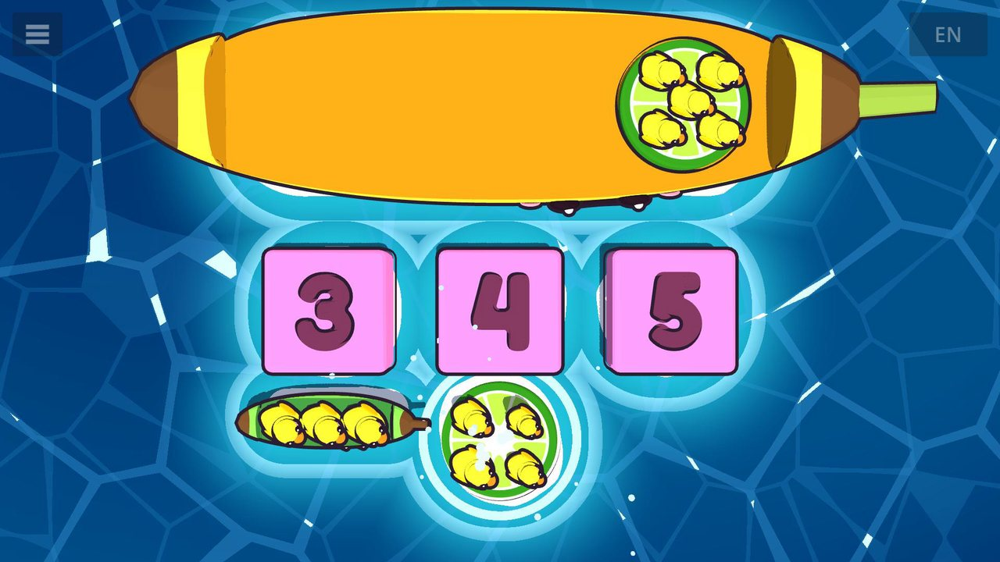
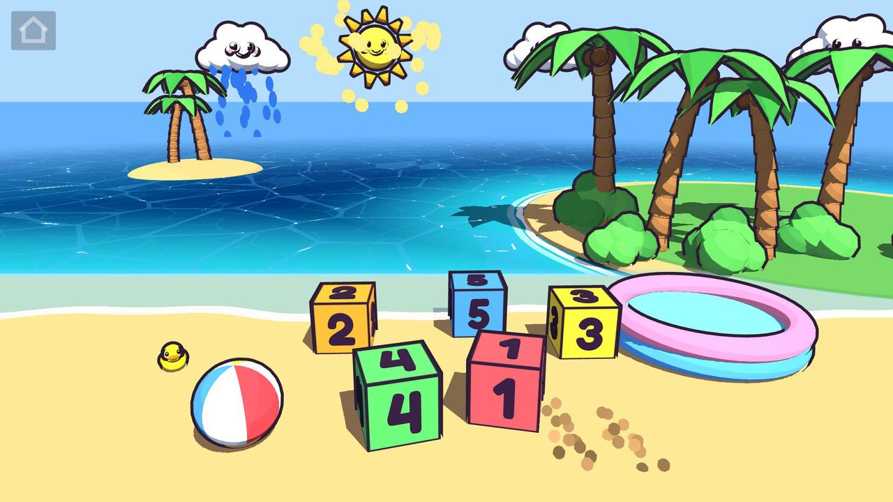

Boop Bay is a gentle little learning game for toddlers, made by a dad for his kid. Little fingers drag toys off a cheerful banana boat and drop them into the matching holes: colors, shapes, fruit, animals, vehicles, sea friends, big and little, numbers and counting. A friendly voice names every one in English, Chinese or Spanish, and a little shark swims by to cheer after every round. When it's time to just play, there's a beach Playground full of things to tap. No ads, no accounts, no tracking, and it plays offline. For ages about 2–4.
- 17 lessons and a beach Playground
- One purchase opens the full game for good
- No ads, no subscription, no accounts and no tracking
- Plays offline
- English, Chinese and Spanish
- No chat and no social media links
- Collects no personal information
See it in action
New lessons
Animals that say hello in their own sounds, vehicles, sea friends, big and little, and four new colors, plus a Playground sky you can tap.
Speaks three languages
Every word in Boop Bay is spoken in English, Mandarin Chinese or Spanish. Here's the same moment of the fruit lesson in all three. Turn the sound on!
The language labels in the corner are only in this video, not in the game.
17 lessons and a playground
The toys ride in on a banana boat. Tapping one makes the voice name it. Then the holes rise out of the water and the voice asks to match them. When a toy lands in its hole, the voice says its name again. A toy dropped in the wrong hole just floats back to the boat, with no failure sound and no scores.
-

Colors 3 lessons
Red, yellow and blue blocks go into the holes of the same color. Then green joins them, then orange, purple, pink and brown.
-

Shapes 2 lessons
A square, a circle and a triangle each find their own shaped hole. Then the star joins in.
-

Big & little 1 lesson
A big duck and a little duck, a big apple and a little apple. Each one fits only the hole of its own size, and the voice asks “Big or little?”
-

Fruit 2 lessons
Chunky apple, banana and strawberry pieces fit fruit-shaped holes, like a wooden puzzle. Then grapes join them.
-

Animals 2 lessons
A cow, a pig and a cat each say hello in their own sound (“Moo!”, “Oink oink!”, “Meow!”) before finding their animal-shaped holes. Then the dog and the duck join the farm.
-

Vehicles 2 lessons
A car, a boat and an airplane (“Beep beep!”, “Toot toot!”, “Zoom!”) drive, sail and fly into their holes. Then the train joins them (“Choo choo!”).
-

Sea friends 2 lessons
A fish, a crab and a starfish swim home to their own shaped holes. Then a wiggly octopus joins them.
-

Numbers 1 lesson
Big pink numbers 1, 2 and 3 drop into number-shaped holes as the voice says each one.
-

Counting ducks 2 lessons
Little boats carrying rubber ducks dock at the matching number: count to 3, then count to 5. The voice counts each duck as it hops (“One! Two! Three!”), then says the total (“Three ducks!”).
-

Playground
A beach sandbox with musical number blocks, a beach ball, rolling waves and a rubber duck that keeps growing as you play: line the blocks up 1 to 5 or stack them, let the shark get the beach ball, or drop a block in the pool for the shark to kick back out. Tap the sun to make it sparkle, tap a cloud to make it rain, and tap the sand for a puff of sand. And there are secrets for curious fingers in the palm trees and the sun.
The full game
Some of Boop Bay is ready to play as soon as it's installed. One purchase, the full game, opens every lesson for good. It's a single payment, with no subscription and no ads.
- Grown-ups only. Buying is on the “For parents” page, behind a grown-ups' question, so little fingers can't buy anything by accident. To get there, hold “For parents” on the start screen, or tap a locked lesson.
- Paid through the store. The purchase happens in the App Store or Google Play, with the price shown in your own currency. Boop Bay never sees your name or payment details.
- Ask to Buy works. If purchases on your child's device need a parent's approval, the full game unlocks as soon as you approve it.
Support
Questions, problems or feedback? Email hello@boopbay.com and I'll get back to you.
Getting the full game back
Reinstalling, or moving to a new device? Open Boop Bay while you're online and signed in to the same Apple ID or Google account you bought it with, and the full game comes back by itself. If it doesn't, tap “Restore purchase” on the “For parents” page.
Privacy
Boop Bay doesn't collect, store on any server, or share any personal information. Purchases are handled by Apple or Google. Read the full Boop Bay privacy policy.